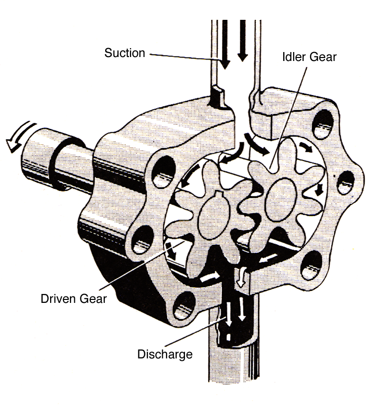
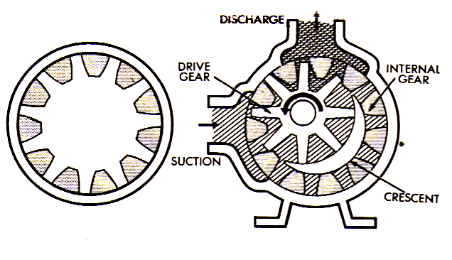
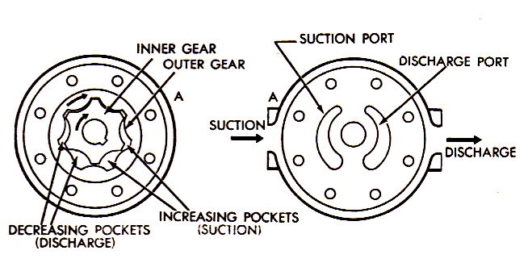
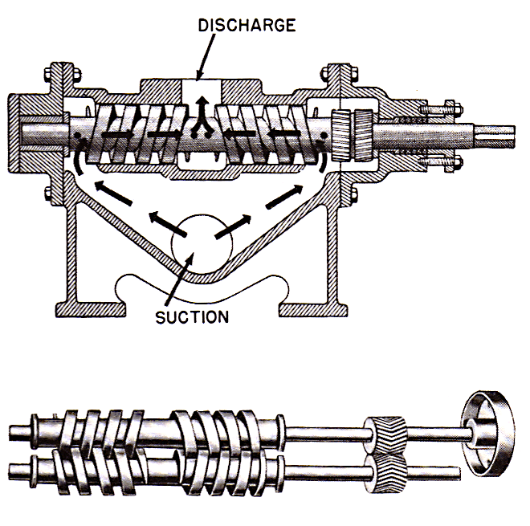
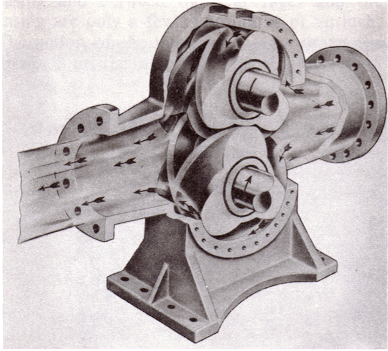
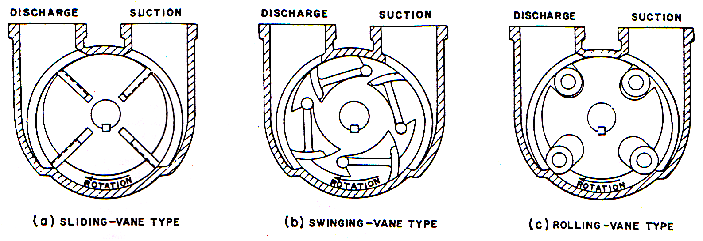

Subsubsection Rotary Pumps
All the many varieties of rotary pumps operate on the same principle. An element called the is rotated in the pump chamber in such a way that the liquid is carried or pushed from the suction side of the pump to the discharge side.
Rotary pumps are positive displacement, since they deliver a fixed quantity of liquid for each operational cycle or revolution of the pump shaft. This means that they want to move liquid even when the pump discharge is blocked. If the discharge of a rotary pump were closed with the pump operating, and if no pressure relief valve was installed in the pump discharge line, pressure would build up till the shaft seal failed, the electric motor overloaded and stopped, the engine driving the pump stalled, the pump casing or discharge piping ruptured, or some other casualty resulted.
When a rotary pump is operating at a constant speed, the amount of liquid delivered to the discharge line decreases slightly as the discharge pressure working against the pump increases. The drop in discharge capacity is due to increased internal leakage through the close clearances between stationary and moving parts in the pump housing. As the discharge pressure increases, the leakage rate from the discharge to the suction side of the pump, through the internal clearances, increases. This internal leakage reduces the pump’s discharge capacity, and is known as
There are dozens of designs for the rotors of rotary pumps. Gears may be used as in Figure 4.3.9, but with almost any number of teeth, and in a variety of forms; elements that look like gears may be employed, although one of the pair may not be capable of rotating the other; two, three, or more lobes may be used; screws may be used which carry the liquid through the pump in their hollowed-out channels; sliding or swinging vanes may be used which form a seal with the walls of the chamber because they are pushed from the center of the rotor by mechanical arrangements or are thrown out by centrifugal force; small pistons moving in and out from the center of the rotor may be used to push liquid through the pump; and there are still more varieties. A few representative designs of rotary pumps will be described in the following sections.
Gear Pumps.

Gear pumps are probably the most common type of rotary pump, and Figure 4.3.9 illustrates a typical example. The liquid is carried from the suction to the discharge in the spaces between the gear teeth and the surface of the pump casing as the gears rotate. One of the gears is directly driven by the source of power, while the other, called the rotates with it in the opposite direction. This is accomplished either because motion is imparted from the drive gear to the idler gear by the meshing of the two gears at the center of the pump chamber, or because outside the pump chamber transmit motion from one gear shaft to the other.
There are close clearances between the gear teeth and the pump casing, and between the teeth of the two gears at their point of contact where they form a continuous fluid-tight joint. As the gears rotate in the direction indicated by the arrows, liquid is trapped in turn between each pair of teeth and the casing and carried away from the suction side of the pump. At the same time, as the teeth un-mesh at the center of the pump chamber, a low pressure is left in the empty space between the gear teeth. Liquid flows in to fill the low pressure areas between the gear teeth. As the gear teeth re-mesh on the discharge side of the pump, the liquid in between the gear teeth is forced out, eventually flowing to the discharge connection on the pump casing.
Three kinds of true gears are used: spur, helical and herringbone. Spur and helical gear pumps can be rotated in the opposite direction to reverse the flow through the pump while generally that is not possible with the herringbone design. When the latter is rotated in the wrong direction, liquid is trapped in the middle of the “V” resulting in pressure strains on the shafts and bearings.
The herringbone gear pump utilizes gears with a very steep “V” shape to the gear teeth. These designs are employed when very smooth discharge is desired. The steep angle on the gear teeth, however; prevents the gear driven by an outside source from turning the idler gear. The steep angle causes the gear teeth to jam together rather than rotate freely. Rotary motion is transmitted to the idler shaft via a set of timing gears instead. The timing gears prevent driving contact between pumping gears to eliminate the jamming problem.
Internal Gear Pumps.

In an internal gear system, the teeth of one gear project outwards , but the teeth of the other gear project inwards toward the center of the gear as shown in Figure 4.3.10. One gear stands inside the other in the internal gear pump. A gear directly attached to the drive shaft of the pump is set off-center in a circular chamber fitted around its circumference with the spurs of an internal gear. The two gears mesh on one side of the pump chamber, between the suction and discharge. On the opposite side of the chamber a crescent shaped form (a stationary part of the pump) stands in the space between the two gears in such a way as to provide a close clearance with them.
The rotation of the central gear by the shaft causes the outside gear to rotate, since the two are in mesh. Everything in the chamber rotates except the crescent, causing the liquid to be trapped in the gear spaces as they pass the crescent. This liquid is carried from the suction to the discharge, where it is forced out of the pump by the re-meshing of the gear teeth. As liquid is carried away from the suction side of the pump, the pressure is lowered and more liquid is drawn in.
The direction of flow through this type of pump can be reversed by rotating the crescent (and the pump cover it is attached to) 180 degrees.
Gerotor pumps.

The gerotor mechanism consists of pair of gear shaped elements, one within the other, mounted in a pump chamber, see Figure 4.3.11. The inner gear is directly connected to the drive shaft and the source of power, and drives the outer gear through direct contact. The inner gear has one fewer teeth than the outer gear. The tooth form of each gear is related to that of the other in such a way that each tooth of the inner gear is always in sliding contact with the surface of the outer gear. Each meshing pair of teeth only fully engages at one point, 12 o’clock in the figure above.
On one side of the point of mesh, pockets of increasing size are formed as the gears rotate (suction pockets), while the pockets on the other side decrease in size (discharge pockets).
Screw Pumps.

Most screw pumps consist of two to four intermeshing screws rotating in a closely fitted chamber. Liquid, trapped in the channels between the intermeshing screws, is pushed to the pump discharge as the thread of one screw rotates onto the channel of another screw. One screw, generally called the , is driven by an outside power source. The other screws, generally called , have their shafts turned by timing gears or by direct contact between the intermeshing screw threads.
Lobe Pumps.

Lobe pumpsoperate on the same principle as gear pumps. There are two rotors turning in the pump chamber operating through timing gears on the shafts outside the pump chamber. Most rotors are fitted with two to three lobes (similar to large gear teeth) to push fluid from the suction to the discharge side of the pump. Although the design will handle both liquids or gases, they are more commonly found pumping gases. A common application is an air pump to supply or increase the air flow to diesel and gasoline engines as part of the system necessary to make them run or increase the horsepower of the engine. In most cases they are considered high volume, low pressure pumps.
Vane Pumps.
In vane pumps, the rotor is fitted with a number of slots into which movable vanes are installed. The pump chamber is larger in diameter than the rotor and the rotor is offset in the pump chamber so that they almost come in contact with each other at the 12 o’clock position and are separated by some distance at the 6 o’clock position. As the rotor revolves, the vanes are thrown out by centrifugal force to bear against the inside surface of the pump chamber. (Liquid pressure behind the vanes also pushes them in contact with the chamber wall and sometimes springs are used behind the vanes to force them against the chamber wall) As the rotor turns from the 12 o’clock position to the 6 o’clock position, it moves away from the chamber wall and liquid flows into the space between the moving vanes. From approximately the 5 o’clock to the 7 o’clock position, the liquid is trapped between two vanes, the rotor and the chamber wall and is pushed to the discharge side of the pump. As the rotor revolves back to the 12 o’clock position, the space between the rotor and the chamber wall decreases, forcing the liquid to the discharge connection on the pump casing. Different designs of vanes may be used, as shown in Figure 4.3.14, but the sliding vane type is most common.
